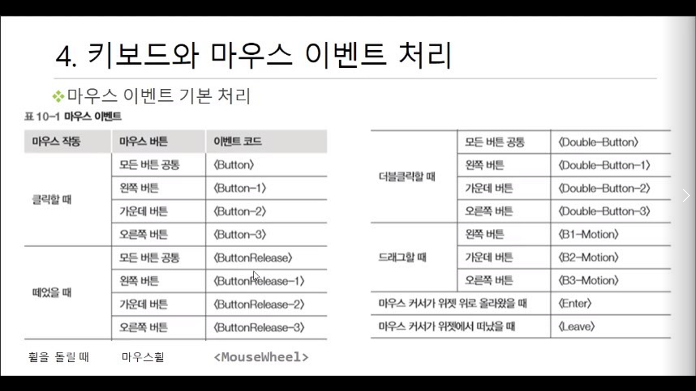

영상 종류 및 용량
영상의 크기 pixel resolution(bit) 영상종류 영상데이터용량(byte)
128 x 128 1 black & white 128 x 128 / 8
128 x 128 8 gray 128 x 128 x 8 / 8
128 x 128 24 color(RGB각 8bit) 128 x 128 x 24 / 8
배열(Array) : 2차원 표를 컴퓨터로 처리할때 사용하는 형식
전체배열의 이름
배열의 각각의 항 = cell,element
배열 크기 : 가로cell x 세로 가로cell
cell위치 : (행 index , 열 index)
(row(세로)행 , column(가로)열 , 색깔) > 첫번째칸(0,0,0) blue
cv.imread('이미지 이름', 0) > 이라면 그레이영상
이름.shape > 행rowsize,열column,칼라의개수channels
cv.waitkey(키보드입력 기다리는시간) > 0이면 무한
cv.destroyAllWindow() > 모든윈도우를 종료
img.item(row,colume,channel)
img.itemset((127,134,2),255) > 원하는 위치의 칼라의화소값 변경
roi(region of interest) = 내가 사용하고싶은 영역
split > 따로따로 저장
merge()(이미지1,이미지2,이미지3)) > 각각의크기가같은 이미지를 합하기
cv.add > 255가 넘어가면 그냥 255로 저장
cv.addWeighted(img1, 0.5 , img2, 0.5,0) > 각각의 색상을 가중치를 주어 합함
transformation > 이미지사이즈확대 및 축소,이미지움직임,이미지회전
affine transform > 이미지를 3차원공간으로 찌그러트리기
perspective transformation > 3차원공간으로 회전
이미지resize x축,y축 1.5배 | interpolation 거칠게확대된형태말고 부드럽게 나오게하기
resizeImg1 = cv.resize(img, None, fx=1.5, fy=1.5, interpolation=cv.INTER_CUBIC)
M = np.float32([[바꾸면,다른효과,20],[바꾸면,다른효과,100]])
M = np.float32([[1,0,x축],[0,1,y축]])
